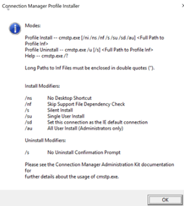

If you start cmstp.exe with no parameters you get this:

The strange thing is that this executable is not supposed to “auto elevate”.
Also, if we check the integrity level of the process we can confirm that it is not elevated by default and is running in medium integrity level
Using 'sendkeys', CMSTP can be automated. How about automated loading of an attacker profile?!
Microsoft have implemented security measures (UIPI) in the past to prevent sendkey attacks so I am amazed that this works. I think it is a little cool at least
The reason is autoelevated COM interface CMLUAUTIL from cmlua.dll, it has ShellExec and some more methods which also maybe out of interest. I think you can just run methods from this interface directly without “sendkeys”
*CMSTPLUA/cmstplua.dll